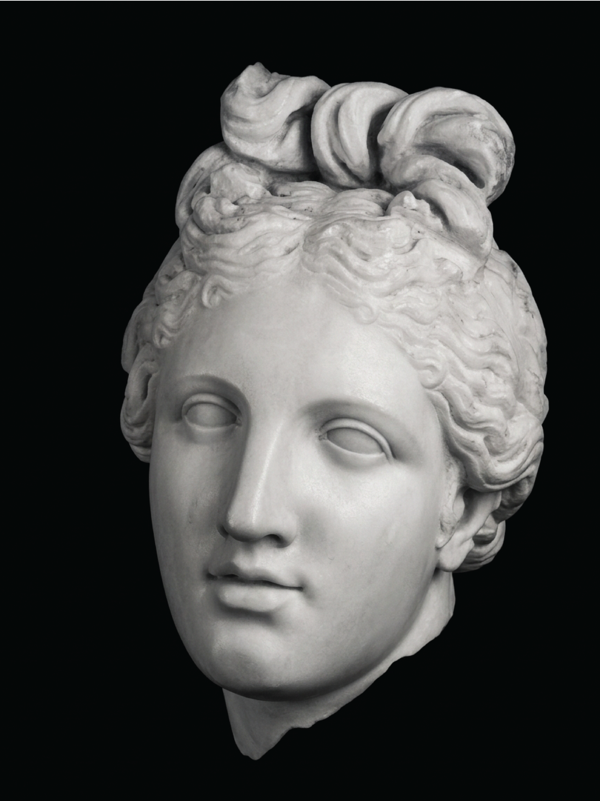
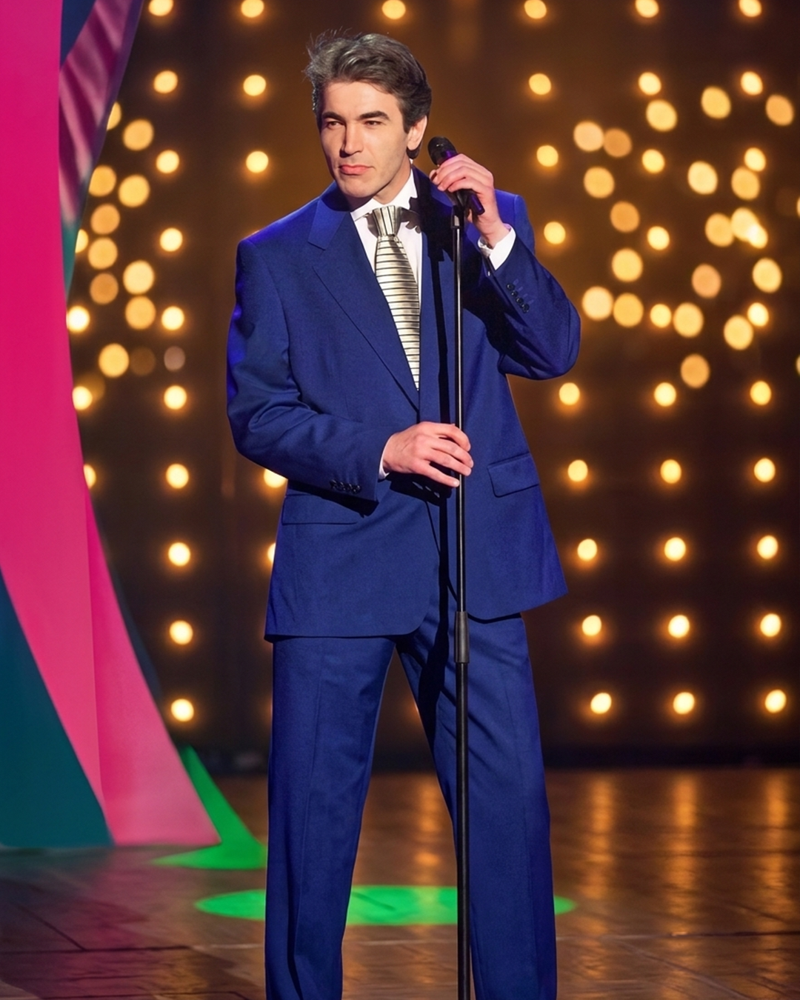

Architecture | Skopje
Concrete Skopje
Modern architecture in post-earthquake Skopje.
Explore the guide
Architecture | Skopje
Modern architecture in post-earthquake Skopje.
Explore the guide

Ritual

Quality of Life | Urbanism

Sport | Design

Art | Antiquity
Music, 1998


Artist | Painting

Artist | Painting

Art | History
Macedonian culture, in your inbox.